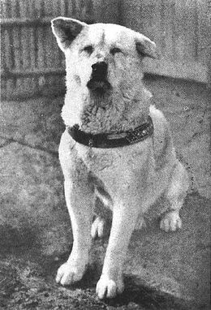

Hachiko
El 10 de noviembre de 1923 nació un cachorro en una granja apartada de la ciudad de Odate, al norte de la Prefectura de Akita. Unos meses antes, el profesor Hidesaburo Ueno había perdido a su mascota y recibió a principios de 1924 a este pequeño perro como un regalo de un cercano, que lo llevó a Tokyo.
En un comienzo no quería quedarse con el animal, porque aún no superaba la muerte del anterior, pero pronto fue convencido por su hija y de esa forma Hachiko, como lo nombraron en su nacimiento, Hachi: ocho, porque fue el octavo en nacer en su camada y ko: hoja, se transformó en un compañero entrañable.
Todos los días, el profesor debía viajar en tren un par de kilómetros para llegar al Departamento de Agricultura en la Universidad de Tokio y hacer sus clases, algo que después de unos meses se hacía más difícil porque su nueva mascota se no quería quedarse en casa.
Un día, Hachiko siguió a Ueno hasta la estación de Shibuya, la más próxima al hogar de la familia, cómo no podía llevarlo a su trabajo, el perro se quedó a las afueras del terminal hasta su regreso.
Pronto, se convirtió en costumbre, haciendo partícipes a las personas que trabajaban por el sector, quienes se encariñaron con el cachorro que tiernamente esperaba a su mejor amigo.
Esto continuó cada mañana, pero sólo por unos meses. El 21 de mayo de 1925, como todos los días, el profesor salió de su casa para hacer clases en la Universidad, pero no volvió más. Se desplomó en plena aula producto de una hemorragia cerebral que le quitó la vida a los 53 años.
En la estación de Shibuya, Hachiko no sabía qué pasaba, Ueno no regresaba y su espera se hacía cada vez más larga. Pasados los días, la familia y sus cercanos fueron a buscarlo, pero este se resistía a dejar el lugar sin su amigo.
Esperó y esperó a las afueras del terminal de trenes, soportando todas las estaciones del año, pero Hidesaburo Ueno no regresaba. Así pasaron 9 años, asombrando a las autoridades y a la comunidad, quienes decidieron instaurar una estatua en su honor, un homenaje en vida para el compañero más leal que ha existido.
Un año más tarde, el 8 de marzo de 1935, Hachiko, el akita fiel, murió a los 11 años de edad, conmoviendo a los habitantes de Tokio y poco a poco a todo el mundo, que conoció la historia de esta mascota que fue mucho más que eso.
Actualmente, a las afueras de la estación de Shibuya continúa estando la estatua, monumento que puedes ver aquí. Miles de personas la visitan, casi como una peregrinación a la figura de este akita.
En homenaje, se le hace una pelicula para hacerlo reconocido mundialmente y recordarlo como héroe.